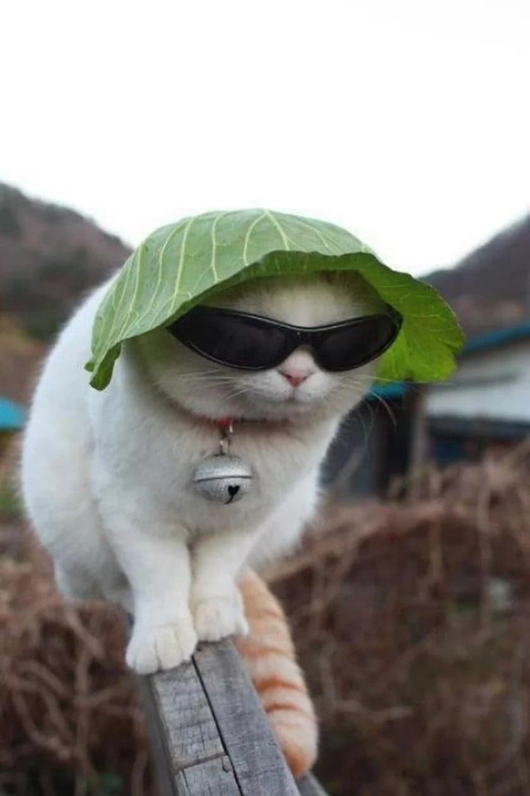
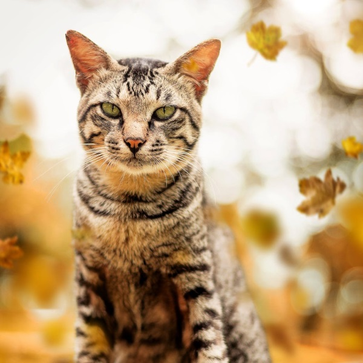
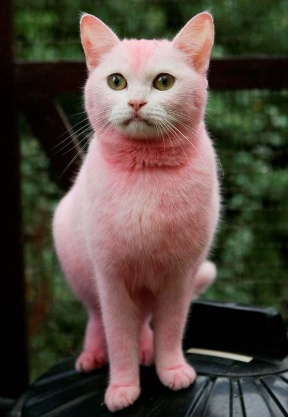
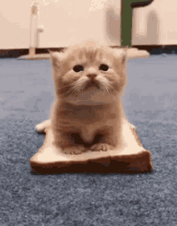

Definicja





KOTYczyli...
Zwierzętakochane przez człowieka
Definicja
Kot- udomowiony gatunek ssaka z rzędu drapieżnych z rodziny kotowatych. Koty zostały udomowione około 9500 lat temu i są obecnie najpopularniejszymi zwierzętami domowymi na świecie.
Porównanie
Porównianie
Wybrane rasy kotów
Porównanie ras
1 - Turecki van
- Wygląd:Oczy mogą być bursztynowe lub niebieskie lub w obu kolorach. Najbardziej niesamowitą cechą tureckiego vana jest jego powiązanie z wodą. I nie chodzi tylko o samą wodę, ale o przyjemność pływania.
- Kraj pochodzenia:Rasa pochodzi z okolic Jeziora Wan w Turcji i żyła tam jako kot domowy przez setki lat. W latach 50-tych XX wieku parkę tureckich vanów przywiozła do Wielkiej Brytanii para turystów, którzy rozpoczęli hodowlę tej rasy w Wielkiej Brytanii.
- Długość sierści:Długa
- Szczotkowanie:raz dziennie
- Cena:2000-4000 zł
3 - Kot Syjamski
- Wygląd:Oczy orientalne w kształcie, położone ukośnie względem nosa. Koty syjamskie występują w różnych kolorach. Barwa oczu we wszystkich umaszczeniach będzie intensywnie niebieska.
- Kraj pochodzenia:Tajlandia(dawniej Syjam)
- Długość sierści:Krótka
- Szczotkowanie:Krótka, lśniąca sierść kota syjamskiego nie wymaga nadmiaru pielęgnacji, ale kota ucieszy uwaga, którą będzie się mu poświęcać podczas zabiegów pielęgnacyjnych.
- Cena:1500–2000 zł
2 - Chinchilla
- Wygląd:Koty rasy chinchilla mają jedno umaszczenie - są białe z zielonymi oczami. Ogon jest krótki i puszysty. Sierść długa, bujna i piękna z gęstym, miękkim podszerstkiem.
- Kraj pochodzenia:Anglia
- Długość sierści:Długa
- Szczotkowanie:Koty rasy chinchilla wymagają codziennego szczotkowania, dzięki czemu długa, opadająca sierść nie będzie plątać się i matowieć
- Cena:2000-10 000 zł
